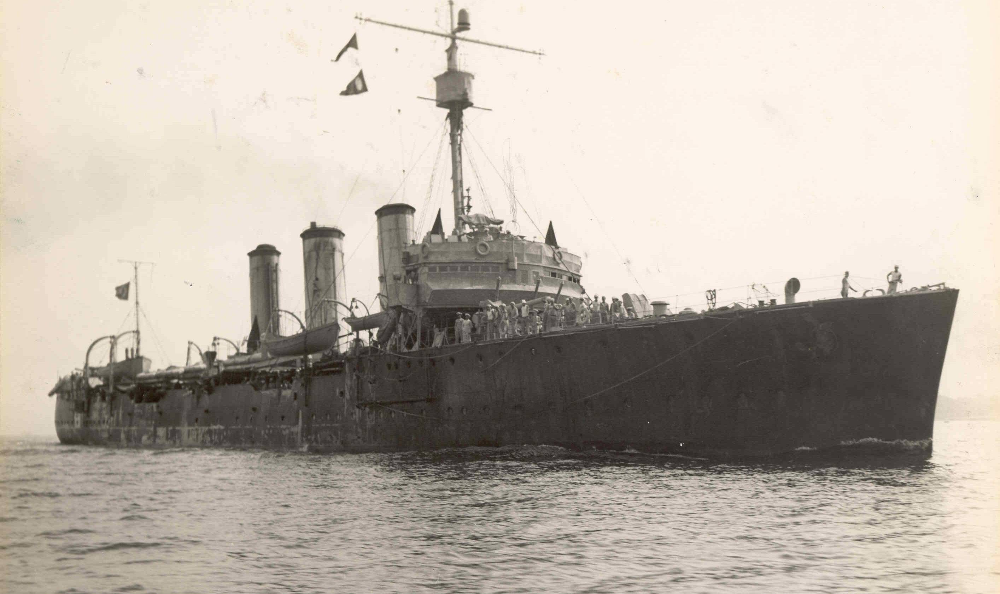

Resumo geral do conflito que ocorreu entre 1939 e 1945, envolvendo potências globais e mudando o curso da história.
Após a Primeira Guerra Mundial, a Europa estava devastada economicamente. O Tratado de Versalhes impôs duras penalidades à Alemanha, gerando ressentimentos. A ascensão de regimes totalitários (como o nazismo na Alemanha, o fascismo na Itália e o militarismo no Japão), combinada com a Grande Depressão, criaram um clima de instabilidade que favoreceu o surgimento de uma nova guerra.
Eixo: Alemanha, Itália e Japão buscavam expansão territorial, domínio econômico e afirmação ideológica (nazismo/fascismo). Aliados: Reino Unido, União Soviética, Estados Unidos, França (e outros), lutavam pela defesa da liberdade, contenção do expansionismo e resposta às agressões dos países do Eixo.
Batalha da Inglaterra (1940): tentativa alemã de dominar o Reino Unido pelo ar. Batalha de Stalingrado (1942–1943): ponto de virada no front oriental, com derrota nazista. Dia D (1944): invasão aliada na Normandia, França, que iniciou a libertação da Europa. Batalha de Midway (1942): derrota naval decisiva para o Japão no Pacífico.
Inicialmente neutros, os Estados Unidos entraram na guerra após o ataque japonês a Pearl Harbor (1941). Forneceram apoio econômico e militar massivo aos Aliados, e foram fundamentais na derrota do Eixo, tanto na Europa quanto no Pacífico. Também foram os responsáveis pelo lançamento das bombas atômicas no Japão.
A União Soviética foi invadida pela Alemanha em 1941 (Operação Barbarossa). Após recuar, lançou uma contraofensiva brutal. Foi o país que mais perdeu vidas (mais de 20 milhões) e teve papel decisivo na derrota do Terceiro Reich, especialmente nas batalhas de Stalingrado e Berlim.
Em agosto de 1945, os EUA lançaram bombas atômicas sobre as cidades japonesas de Hiroshima (6 de agosto) e Nagasaki (9 de agosto), matando instantaneamente cerca de 200 mil pessoas. Foi o primeiro e único uso de armas nucleares em guerra, e forçou a rendição do Japão.
Humanas: Milhões de mortos, feridos e deslocados. Políticas: Criação da ONU, início da Guerra Fria entre EUA e URSS. Econômicas: Reconstrução da Europa (Plano Marshall), queda de impérios coloniais. Sociais: Julgamentos de Nuremberg, Declaração dos Direitos Humanos, descolonização.
A Segunda Guerra Mundial foi um conflito global que durou de 1939 a 1945, envolvendo países de todos os continentes. De um lado estavam as potências do Eixo (Alemanha, Itália e Japão) e, do outro, os Aliados (Reino Unido, União Soviética, Estados Unidos, entre outros). A guerra começou com a invasão da Polônia pela Alemanha, e se espalhou rapidamente pela Europa, Ásia e África. Foi marcada por batalhas históricas, o Holocausto, e o uso de bombas atômicas pelos EUA contra o Japão. Com cerca de 70 milhões de mortos, foi o maior conflito da história. Seus efeitos mudaram o mundo, levaram à criação da ONU e ao início da Guerra Fria entre EUA e URSS.
